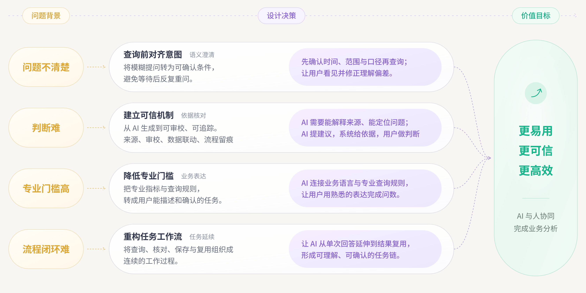
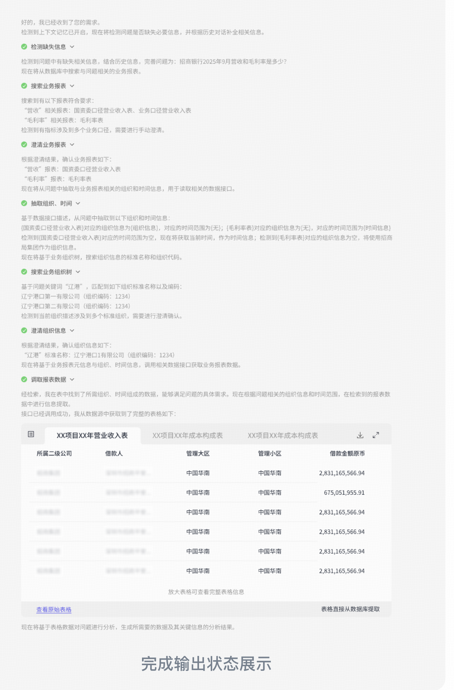

招财 Smart
财务智能化平台
02 · 设计方法
可信机制的建立
查询前对齐业务口径，执行中呈现进展，结束后保留核对依据。

- 问题不清楚
- 查询前对齐意图。将模糊提问转为可确认条件，避免等待后反复重问。先确认时间、范围与口径再查询；让用户看见并修正理解偏差。
- 判断难
- 建立可信机制 · 依据核对。从 AI 生成到可审校、可追踪。来源、审校、数据联动、流程留痕。AI 需要能解释来源、能定位问题；AI 提建议，系统给依据，用户做判断
- 专业门槛高
- 降低专业门槛。把专业指标与查询规则，转成用户能描述和确认的任务。AI 连接业务语言与专业查询规则，让用户用熟悉的表达完成问数。
- 流程闭环难
- 重构任务工作流。将查询、核对、保存与复用组织成连续的工作过程，让 AI 从单次回答延伸到结果复用。
价值目标：更易用、更可信、更高效；AI 与人协同完成业务分析。
窄屏可左右滑动查看完整图片
查询前 · 对齐业务口径
人机协作：从业务提问到分析结果
用户确认业务含义，AI 整理条件，数据服务执行查询。
- 提出问题
- 识别条件
- 确认口径
- 执行查询
- 结果复用
业务用户
AI 助手
数据服务
提出分析问题
识别查询条件
确认利润口径
发起数据查询
查询业务数据
生成分析结果
查看并保存
存在歧义 确认后继续 条件完整，直接查询 查询条件 返回数据左右滑动查看完整流程
用户提出问题后，AI 识别查询条件。条件完整时直接发起查询；存在歧义时请用户确认利润口径，再继续查询。数据服务返回数据后，AI 生成分析结果，用户查看并保存。
何时直接查询，何时需要澄清
按已识别条件推进，只补齐影响查询的关键信息。
净利润变化 时间、范围与指标均已明确。
直接查询，保持任务连续。
利润变化 「利润」可能对应不同统计口径。
只确认歧义项，保留已识别条件。
协作边界：AI 整理与执行，用户确认业务含义。
执行中与结束后 · 反馈与留痕
执行时看见进展，
结束后查得到记录
将处理过程收拢为三个可读阶段，保留条件确认、数据来源与每次执行记录。
交互方案 · 示例数据
招财 Smart
任务 ZC-0248
当前查询
查看 2024 年全集团利润变化
- 统计时间
- 2024 年
- 组织范围
- 全集团
- 指标口径
- 净利润
「利润」已由用户确认为「净利润」
执行过程
已完成查看处理明细7 个业务节点
分析结果
2024 年集团净利润
全年合计 6.08亿元
季度净利润单位：亿元
集团经营指标表
2024 年 · 4 条季度数据 · 示例
等待反馈
随着等待时间，补充必要的信息
0—3 秒
及时响应
立即显示当前阶段，已返回的内容先呈现。
3—10 秒
保留进行状态
突出当前执行步骤，用骨架屏预留数据位置。
10 秒以上
说明等待情况
提示查询仍在进行，提供停止操作，保留已确认条件。
保留条件，继续下一步
查询超时时从失败步骤重试；没有数据时调整统计范围。两种情况分别反馈，并保留此前的查询记录。
从结果，找到当时的依据
条件、操作、数据与结果关联到每次执行。用户可切换快照核对口径，也可打开该次查询的原始表格。
原始界面
完成输出后的记录与数据入口

03 · Markdown 输出规范
为不同业务场景，
建立统一的回答规范
从一句结论到完整经营分析，统一内容层级、数据表达与引用方式。
把内容与样式分开
同一份内容遵循同一套排版，减少逐页调整。
让输出规则可复用
把标题、口径和来源约定写进模板，适配不同任务。
让交付有共同依据
以可读文本保留结构，便于内容复核与持续维护。
8 套业务回答 · 12 类组件规则交互方案 · 示例数据
规范的落地边界
文字有结构，
界面有统一的呈现规则
内容约定
模型按任务选择结论、依据与建议，明确统计范围、单位和数据缺口。
呈现约定
渲染器统一字号、间距、表格和引用；图表由约定的数据结构呈现。
交付约定
规范、完整示例与数据一起交付，后续可以逐项检查和版本维护。